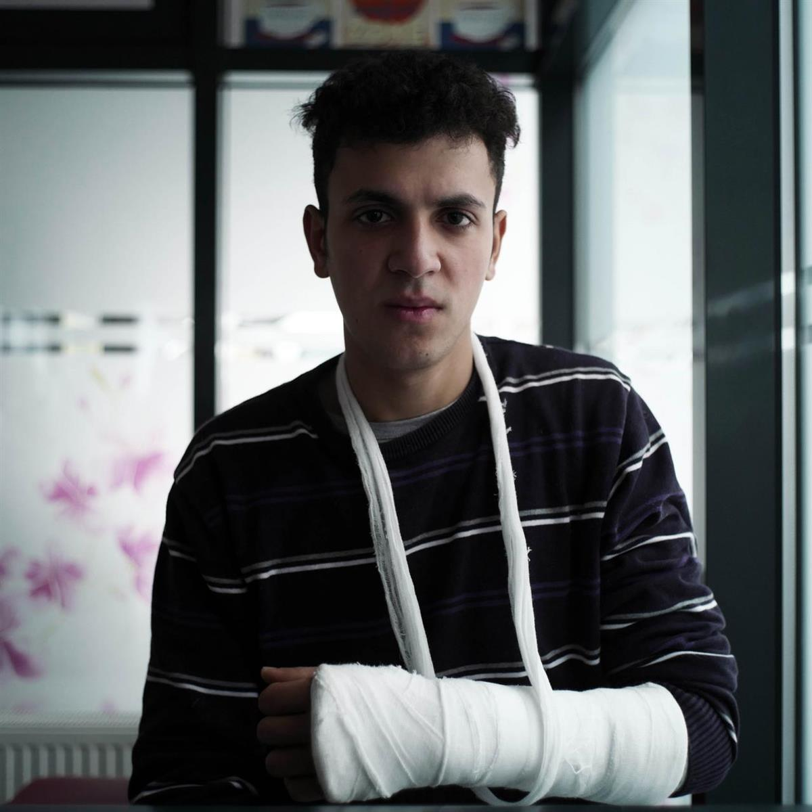
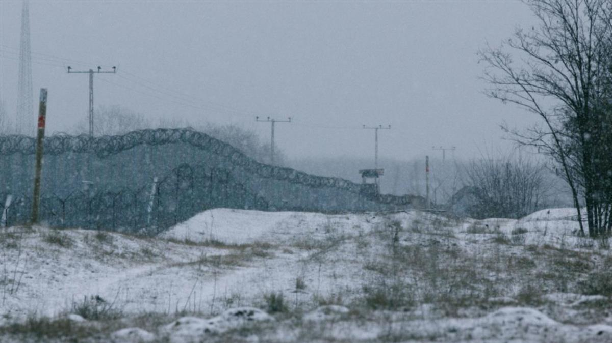
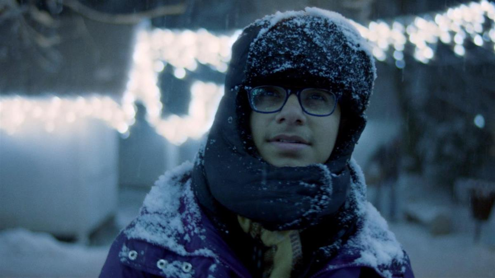
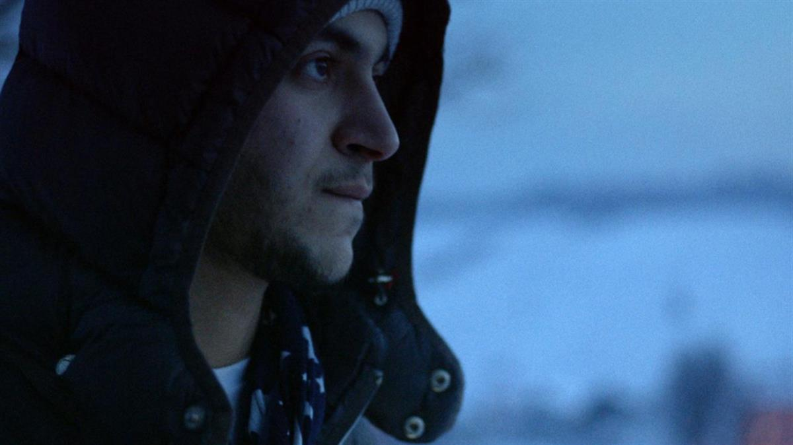

Mustafa, 17, fled Iraq three years ago: Credit: Shadow Game
Mustafa, 17, fled Iraq three years ago: Credit: Shadow Game
PEACE & HUMANITARIAN|#refugees|NEWS
Published on 09 March 2021, 05:50
by Pip Cook
Mustafa covers his face with his hand, his body shaking with fear and cold. His other hand is in a cast and sling - an injury sustained during a recent beating he suffered at the hands of police at the border between Bosnia-Herzegovina and Croatia. Tears stream down his face as he recounts the ordeal, in which he was tortured, electrocuted and beaten until he passed out. Mustafa is 17.
This isn't the first time the teenager has been attacked while trying to cross Europe's borders. Since fleeing the conflict in Iraq over three years ago, he has faced countless dangers on his journey to reach a safe country. He has attempted to cross the same border 50 times.
Frightened and alone, thousands of miles from home, he is losing hope. “The problem is, I can't go back to Iraq and I can't stay here,” he says. “I am separated from my family. They live in a different country. I don't know where to go. ”
Sadly, Mustafa's story is by no means unique. He is one of a group of young boys whose journeys across Europe are depicted in the documentary film Shadow Game , premiering this year at the International Film Festival and Forum on Human Rights (FIFDH) in Geneva. The film follows a number of teenage refugees who have fled countries such as Syria, Sudan, Iraq and Afghanistan to seek asylum in Europe.

Mustafa, 17, from Iraq, tried to cross the border between Bosnia-Herzegovina 50 times, requesting aslyum each time he was pushed back. Credit: Ton Peters.
Filmed over the course of three years by the directors and the boys they met on their journeys, Shadow Game exposes the brutal consequences of the EU’s hostile asylum policy. We meet teenagers who flee their homes and brave the arduous journey to Europe, smuggled in trucks, hitching rides on trains or often walking for weeks in search of safety.
The “game”, as it is nicknamed by many of the boys, starts when they attempt to cross the borders - characterised by barbed wire fences, lookout posts and heavily armed guards. Pushbacks and beatings are commonplace, but they are preferable to the interminable wait in squalid camps, abandoned buildings or sleeping rough on the streets, easy prey for traffickers and criminals.
“The game is the worst thing that has happened to me in my life,” says Mo, 17, who has been stuck in Greece for two years after fleeing Iran. His face is pocked with scars from when he was mugged and attacked trying to cross a border. “The game is like playing with life and death.”
The human face of Europe’s hostile asylum policy. The idea for Shadow Game came to Dutch directors Eefje Blankevoort and Els van Driel when they were at Moria refugee camp on the Greek island of Lesbos in 2016, shooting a documentary about the impact of the EU-Turkey deal that came into force that year. The agreement called on Turkey to prevent asylum seekers and migrants from reaching the EU in exchange for financial assistance for refugees in Turkey. It’s widely viewed to have created the ongoing humanitarian crisis in the Greek islands, turning refugees into political bargaining chips.

The Serbian-Hungary border. Credit: Shadow Game.
When Eefje and Els visited Moria, infamous for its inhumane conditions before it burnt down in 2020, countries across Europe were closing their borders and becoming increasingly hostile to people seeking asylum. It was there they met a 15-year-old Gambian boy named Mohammed who was attempting to reach his father in Spain.
“He was in the adult camp and he didn't know anything about his rights as a kid. There was no communication with him and he wasn't treated as a child,” says Els. “We thought he can’t be the only one.”
“What can we do? Find us a solution. We are suffering and we are weary.” - Mustafa, 17.
Soon after the pair began researching the plight of unaccompanied child refugees, they came across a harrowing statistic which revealed the disappearance of tens of thousands of unaccompanied minors along Europe’s migration routes. It became clear that thousands of children were disappearing, possibly falling into the hands of organised traffickers and criminal gangs while European countries failed to give them sanctuary.
“We realised that there was something going on with these unaccompanied minors struggling through Europe,” says Els. “They are not safe and they are not protected by the system, if there is a system. That’s when we decided to make this film, and visit the places where children were getting stuck at Europe’s borders.”

Mohammed, 14, from Syria, stuck in Bosnia-Herzegovina. Credit: Shadow Game
Over the next few years, the directors travelled to border regions where they had heard refugees and asylum seekers were attempting to cross into EU countries, in places such as Serbia, Hungary, France, Italy, Croatia and Slovenia. “When we travelled to those places, we found kids everywhere, stuck in adult camps, or abandoned buildings, or just out in the woods, and unprotected,” says Els.
Over the course of filming, the directors witnessed the deteriorating situation at Europe’s borders first-hand. “We saw ‘Fortress Europe’ get more and more violent,” says Els. “It's like a war zone at the borders and it's getting worse every day. There are people dying. There are people shot at and pushed back in a violent and degrading way. It’s become worse and worse.”
The pair met many boys who were happy to share their stories, with some already documenting their journeys. “They felt that they finally had some attention, someone who they could tell their story to,” says Els.
“I can’t relive my childhood, but I think my brother can. I hope he still gets to have a childhood before he gets old.” - Jano, 18.
“I haven’t felt like a child since I came here. Where is my childhood? I feel like an old man.” - Shiro, 15.
Film as a tool for change. In 2020 after years of filming, the directors entered their film to the FIFDH’s Impact Day initiative, which invites filmmakers from around the world to submit projects that highlight a particular issue or cause. Creators of the successful entries are then put in contact with Geneva-based and international organisations that share the same cause, to explore how the film can be used to achieve these shared goals.
“The thought behind the Impact Day is to give the best possible opportunity for this type of film to make a positive change in the world, by creating or facilitating connections between filmmakers and changemakers,” says Laura Lombardi, who heads up the Impact Day initiative. “At the bottom of their hearts, the filmmakers want to contribute to solving the issue that they're talking about. The way they can do that is by working or partnering with organisations who are actually working on those same topics on the field or in advocacy.”
Entries this year include projects that grapple with issues such as climate change in the Philippines, child trafficking in South East Asia, and the use of the death penalty in Belarus. The 16 films will be presented during the Impact Day event on Wednesday 9th of March.
“When the film is finished it doesn't stop there - it's the beginning of something,” says Laura. “You want your film to do justice to the people that have been generous enough to give you their stories and their lives because that's what it’s all about.”

Jano, 18. Credit: Shadow Game
Over the course of the Impact Day programme, the filmmakers gain coaching from industry professionals and impact producers, and have the chance to form connections with organisations and NGO partners. Shadow Game won the prize for the best impact plan in last year’s initiative, which gives filmmakers financial support to allow them to develop their project.
The initiative allowed Eefje and Els to form partnerships with organisations such as Save the Children and FIACAT, who have helped them explore how the film can have the greatest impact. They are hope to organise screenings at the European Parliament, in refugee camps, and near the borders in countries where communities are most hostile towards asylum seekers and refugees, when the Covid-19 epidemic is under control.
“Launching the film in Geneva is amazing, and that's the starting point for hopefully a long trajectory where we can bring the film to wherever we can think of,” says Eefje. “We want as many people as possible to see it, and important people who can make a change.”
The Shadow Game directors have also recently released a manifesto 'Protect children on the move’ which lays out four key issues the film seeks to address: Europe’s inhumane border policies, children’s rights, the right to claim asylum, and how countries must step up and take responsibility for children once they are granted asylum.
“We only want to live a peaceful life. In an area where a person cannot go out in the dark, cannot get an education, cannot go to school or the academy, where a person doesn’t have any peace. Would you spend your time there? In an area where you will not have peace and won’t be able to go to a doctor, where you will not be able to go to school, would you spend your life there? You would not spend your life there.” - Foud, 15.
At the heart of Shadow Game lies a desire to change people’s perception of refugees and asylum seekers, and put a human face to a humanitarian catastrophe. “[The film tries to] humanise the whole issue of refugees,” says Eefje. “Once you're in this story and you've gone through this emotional journey, I think you can have a better conversation about the solutions.”
Els agrees. “You're travelling with these kids, and they bring a face to this whole gigantic problem of migration and make it human. It could have been your kids, it could have been you if you are young. They have the same aspirations, the same hobbies, same dreams.”
Over the course of the film, it is clear that these are children who have no choice but to keep going, in the hope that one day they will reach safety and a better life. Boys who cannot swim wade through fast-running streams in the pitch darkness. Two brothers spend sleepless nights in the sub-zero Serbian countryside fending off wild animals with cans of aerosol. A 15-year-old, who in an early scene proudly shows off the newly acquired hairs on his chin, walks through a minefield.
As Mustafa says in the film, turning back is not an option. Having been repeatedly pushed back from the border between Bosnia-Herzegovina and Croatia, his request for asylum ignored each time, he finally reached Slovenia and quickly travelled to Italy, before settling in the Netherlands.
“‘We will make it - that’s their mantra,” says Els. “We will make it.”
Shadow Game is now available to watch online at the FIFDH website. You can still register for this year’s Impact Day webinar on Wednesday 9th March.
What else can you do? Take action: give your voice, give your money or give your time. You can sign the manifesto 'Protect children on the move’ at www.change.org/protectchildrenonthemove and share with the hashtags #protectchildrenonthemove and #shadowgame. For more information visit the Shadow Game website.
#refugees #Migration #Asylum seekers
SOURCE: GENEVA SOLUTIONS